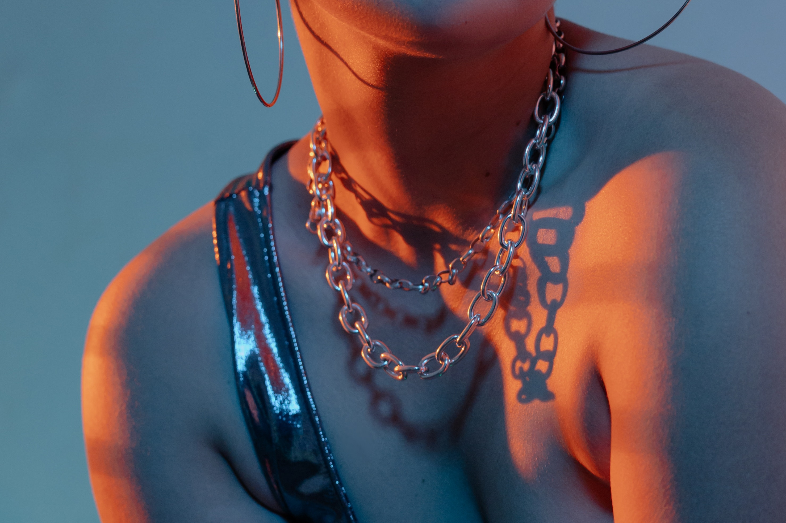

Who are we?

Mangata and Gallo is a jewelry store that specializes in special occasions like engagements,
weddings and anniversaries. The jewelry company primarily operates online and has a small storefront
in Austin, Texas with an atelier attached for browsing. Mangata & Gallo's selection of jewelry is
known for its high-quality and classic look. The owner, an Austin local, is well known for her
jewelry designs.
How it started?
Mariana is the owner and the lead designer of Mangata and Gallo. After graduating from design school
with a specialization in diamond cutting and metal smithing, Mariana opened a store in her hometown,
Austin and started to grow her business online.
What is next?

Mariana has always managed every aspect of the
business, from jewelry design to marketing to e-commerce. However, she recently hired several
artisans to help craft her designs and a young employee to help manage the company website and
social media accounts.